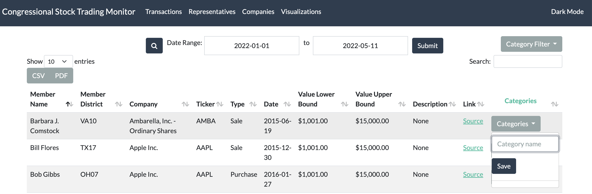
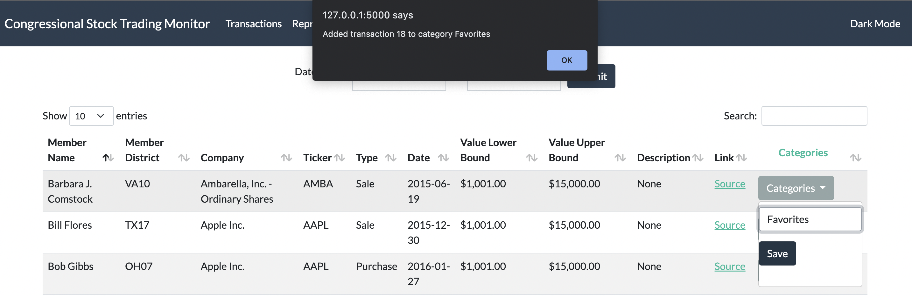
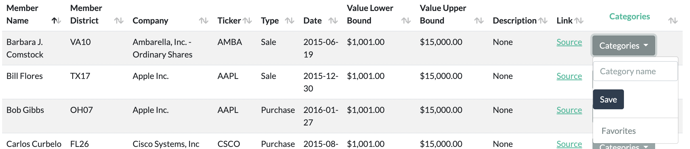
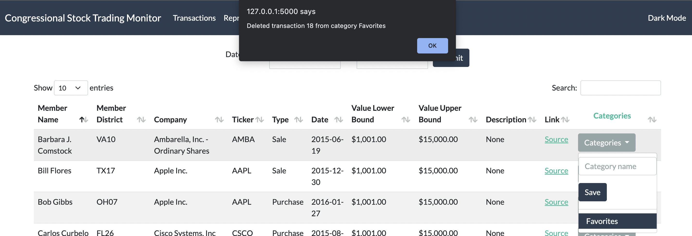
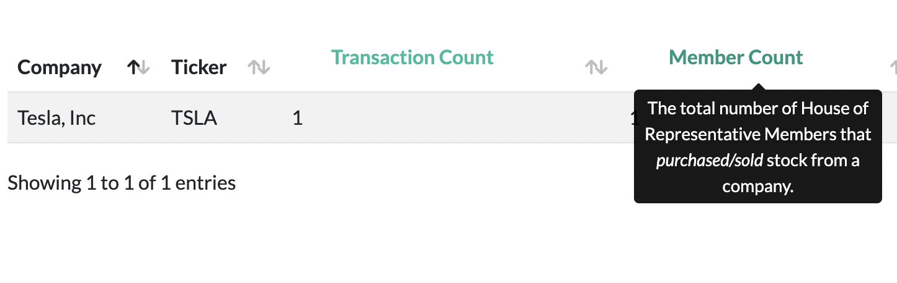

About¶
The Congressional Stock Trading Monitor will be a tool that assists users in collecting, parsing and viewing data about stock market transactions that members of the U.S. House of Representatives publically report.
User Documentation¶
On the Congressional Stock Trading Monitor webpage, users can retrieve information and data pertaining to the U.S. House of Representatives stock market transactions. The Congressional Stock Trading monitor consists of three main pages that can be accessed through the navigation panel:
- Transactions page (homepage): shows list of transactions
Includes the following data for each transaction: U.S. House of Representatives member name, member district, company, ticker, type of transaction (purchase/sale), lower bound value of the transaction, higher bound value of the transaction, transaction description, a link to the official pdf of the stock transaction, and an option to add/delete the transaction to a category.
- Representatives page: shows list of representatives along with their aggregated purchased/sold stock data
Includes the following data for each representative: U.S. House of Representatives member name, trade count, transaction purchase count, transaction sale count, average transaction value, lower bound and higher bound value of the purchase range, and lower bound and higher bound value of the sale range.
- Companies page: shows list of companies along with their aggregated purchased/sold data
Includes the following data for each company: Company, ticker, transaction count, count of members having transactions with this company, lower bound and higher bound value of the purchase range, and lower bound and higher bound value of the sale range.
User Directions¶
On each page, select the date range (a calender will pop up to specify specific dates) at the top of the page, and click the submit button to see transactions in the specified date range.
Note: To see all possible transactions, select date range 2013-01-01 to the current date.
Additional Features¶
Light and Dark Mode button on the top right of the webpage
Search through the list of transactions (accepts partial searches and is case insensitive)
Pick to show different number of entries on the page (ex.10, 25, 50, 100). Clicking on the next/previous buttons lets you go to different pages of entries.
The entries in the table can be sorted by each column by clicking the column name (the corresponding arrow to the right of the column name shows the direction of the sort)
On the transaction page, the Update Transactions to a Category column saves the current transaction to a category through a cookie. In future updates, the transactions that were saved to a category will be displayed on its own page for the user.
Click the “Category” button for a transaction, and type in the name of the category you want to save the transaction to.
Click the Save button to save the changes to a cookie. An alert will show on the page to indicate the cookie has been updated to save the transaction to a category.
- After refreshing the page, you can see categories at the bottom that you have previously saved transactions to.
- 
Clicking on a category button at the bottom will add or delete the current transaction from that category (the category button acts as a toggle button).
Highlighted column names are hoverable to show a tooltip giving more information about what the column represents. The tooltips are currently shown in the Companies and Representatives page
